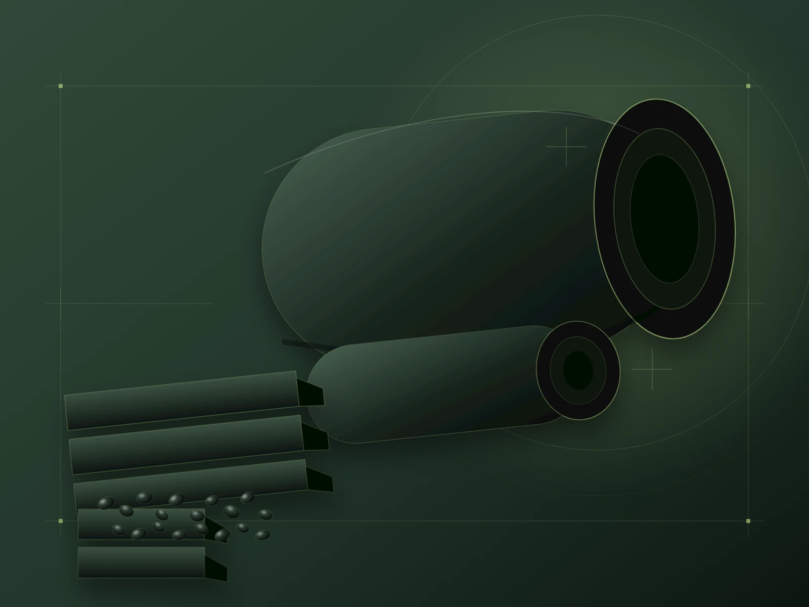

HDPE pipe
Wall thickness, filler tolerance, surface and the pipe standard are reviewed before a grade direction is proposed.
Five BK grades from 20% to 40% carbon black for HDPE pipe, conduit and profile extrusion.
Share the resin, pipe or profile dimensions, surface target and service conditions. The team reviews carbon black, carrier, filler and dispersion by exact grade before a sample or quote.

Start with the pipe or profile and the job it has to do. A thick pressure pipe, a thin conduit wall and a visible profile surface do not place the same demand on dispersion, filler or let-down.
Wall thickness, filler tolerance, surface and the pipe standard are reviewed before a grade direction is proposed.
Thin walls and long runs make dispersion and surface defects easier to see. Check the line, not only the TDS.
Profile geometry, gloss or matte target and visible faces guide the grade review.
Batch variation, contamination and moisture are reviewed with the grade and trial conditions.
The current TDS examples show a trade-off between carbon black and CaCO3 filler. The right position depends on wall thickness, surface, filler tolerance and the pipe or profile standard.
| Grade | Carbon black | Carrier | CaCO3 filler | Pipe/profile position |
|---|---|---|---|---|
| BK020 | 20% | LLDPE + LDPE, 22% | 47.8% | Cost-led; thick pipe and profile |
| BK025 | 25% | LLDPE + LDPE, 25% | 37.8% | Economy pipe and profile |
| BK030 | 30% | LLDPE + LDPE, 32% | 27.8% | Balanced pipe and profile |
| BK035 | 35% | LLDPE + LDPE, 37% | 17.8% | Higher blackness; lower filler |
| BK040 | 40% | LLDPE + LDPE, 40% | 5.8% | High jetness; low let-down |
* Current TDS examples. Addition range is a starting recommendation, not a fixed dosage. Confirm the current grade, revision and packaging for the offered product.
Pipe and profile standards, wall thickness and surface requirements decide which checks matter. The list below keeps the grade comparison tied to the actual line.
Look for specks, streaks and gels. Record the screen pack and pressure history rather than treating one reading as the cause.
Carbon black content and dispersion can affect UV and weathering performance. Confirm the pipe standard, exposure and test method; a masterbatch TDS alone does not certify the finished pipe.
Match the carrier and flow to the PE grade and extrusion process. A grade confirmed in one pipe or profile is not automatically right for another.
CaCO3 filler changes density, surface and the meaning of a weight-based addition rate. Check the pipe or profile specification before comparing grades.
Wall thickness, profile geometry and visible faces determine how easily a defect is seen. Inspect at the agreed lighting and viewing distance.
Agree the resin, pipe or profile, thickness, ratio, machine and inspection method before running the sample. The full selection sequence is in the blown film guide.
Four steps, with the grade and document scope confirmed before a commercial offer.
Resin, dimensions, surface target, current grade, standard and expected volume.
Carrier, carbon black, filler, MFI and let-down direction are checked against the application.
Agree the line conditions and control sample before judging the result.
TDS, COA, SDS and compliance scope are reviewed by exact grade and application.
It depends on wall thickness, filler tolerance, surface, UV exposure and the pipe standard. The current TDS examples place BK020 and BK025 at the cost-led end, BK030 in the middle, and BK035/BK040 at the higher-blackness, lower-filler end. Start with the pipe requirement, then confirm the grade in a trial.
The current BK range covers 20% to 40% carbon black. Pipe standards may specify carbon black content, dispersion or UV performance; confirm the exact requirement before treating a masterbatch percentage as the finished-pipe result.
It can be reviewed for recycled PE, but batch variation, contamination and moisture change the result. Share the recycled stream and trial conditions; the grade still has to be confirmed on your line.
Documents are reviewed by exact grade, application, destination market and scope. Not every grade or product has every document. Use the technical document request and confirm what applies to the offered product.
Carbon black can contribute to UV and weathering protection, but the finished pipe or profile depends on the grade, carbon black content, dispersion, wall thickness, service conditions and the relevant standard. The page does not certify the finished article.
Use the same resin, pipe or profile, thickness and machine conditions as the control. Compare dispersion, surface, screen pack pressure, output and the agreed standard, then keep the grade, batch and actual addition rate with the samples.
Send the resin, dimensions, surface target, current grade and service conditions. For TDS, COA or SDS, use the technical document request. The team will review the grade and document scope before a quote or sample.

A masterbatch supplier supporting plastic processors through black and desiccant product routes, application-led review and grade-specific document requests.